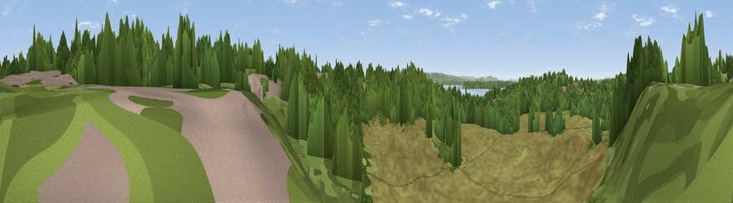

Viewpoint near Bournemouth
#40483 in England · top 75% of its area beats it · near BournemouthWhere it is
The exact computed spot (SZ 05225 89586). Click the marker for map links.
The view, rendered

A 360° render of this exact spot computed from the terrain model, tree cover and land cover — summer colours, afternoon light, calibrated against photographs of famous viewpoints. Real trees, hedges and buildings will differ in detail.
The panorama
Grey silhouette: terrain skyline in each direction (720 bearings, Earth curvature and refraction included). Dashed green: skyline with trees (+15 m) and buildings (+8 m) as obstacles. Blue strip: how far the ground is visible on each bearing.
Where the view opens
Wedge length = distance to the farthest visible ground on that bearing (vegetation-aware). Rings at 10, 25 and 50 km.
What fills the view
51% grassland · 39% woodland · 7% built-up · 3% water
Angular shares of the visible panorama (visual magnitude), not map area. Landscape diversity 0.44 (0–1 Shannon).
Key numbers
More beautiful places nearby
The staircase of upgrades: each row has a higher view potential than everything closer. Driving times are estimates from straight-line distance, calibrated against real road routing — check an actual route before setting out.
| Place | Direction | Drive | Score |
|---|---|---|---|
| Viewpoint near Bournemouth | E · 1 km | ~3 min | 51.7 |
| Viewpoint near Poole | NW · 4 km | ~8 min | 55.7 |
| Viewpoint near Merley | NNW · 7 km | ~15 min | 59.5 |
| Viewpoint near Studland | S · 8 km | ~16 min | 62.6 |
| Viewpoint near Studland | S · 8 km | ~17 min | 80.9 |
| Viewpoint near Studland | S · 8 km | ~17 min | 82.2 |
| Ballard Down | SSW · 9 km | ~17 min | 83.2 |
| Viewpoint near Harman's Cross | SSW · 10 km | ~19 min | 84.1 |
50.70589, -1.92738 · source: osm viewpoint · position refined by local search. Computed location — check access rights before visiting.